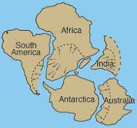
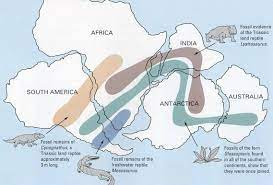
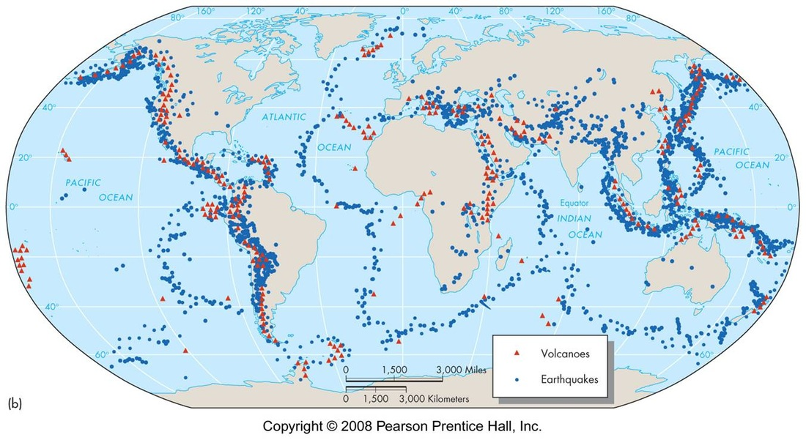

Clues
Evidence Behind the Idea

1.) Continent Pieces Fit Together
When we look at a map of the Earth we will notice something interesting about it. If you were to try and connect the continents together like a puzzle, you will notice that they actully do fit nicely into each other. This is one piece of evidence that led to the idea of plate tectonics. The fact that the continents were all connected at one point means that they have been moving away from each other.
2.) Fossil Evidence/ Geological Evidence
Next up is fossil and geological evidence. Alfred Wegener didn't just study the rock formations during his journeys, he also studied the environment, specifically fossils that each continent had. What does this mean though? After careful observation of the fossils and their locations, we can see a pattern that leads us to believe that the continents were connected. Similar fossils were found scattered through different continents. Specifcally, fossils of organisms that could not survive the current environment of the land now. This led people like Wegener to believe that the continents were connected which allowed for animals and species to move across the continent. Now that they are spread apart, we know that they had to be at a travelable distance at the time. This is the same for rock formations; Wegener noticed that the same type of rocks seemed to be continuous across different continents.
3.) Distance Differences
In different travels that Wegener had gone on, he took the distance from Greenland and Europe. In two different explorations that he went on, the distance between the two locations were growing further, implying that these two places were moving away from each other due to plate movement.
4.) Earthquake and Volcano Plate Boundaries
Another piece of evidence that shows us more clearly that the idea of continental drift makes sense is using earthquake and volcano mappings. From the image above we can see that that the activities seem to outline the plates nicely. This makes sense since the cause of an earthquake and a volcano is caused by movement of the plates which causes the ground to move or open up. This is one of the new forms of evidence to support the idea of continental drift just because the technology to retrieve this kind of information was not available yet. More information will continue to come out as we explore more of the Earth and keep advancing technologically.